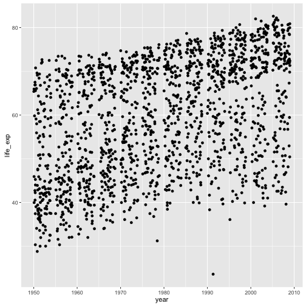
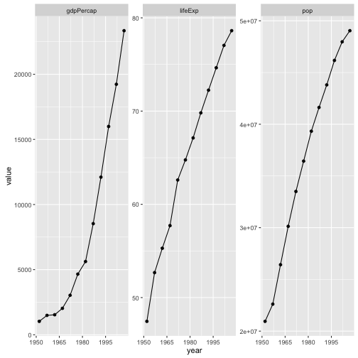

데이터 과학
행복한 시각화 생활을 위한 비밀
데이터 랭글링 숨은 문제 1
그래프를 생성하는데 고생을 하고 있다면, ggplot2와 코드를 작성하는 본인에 문제가 있다고 가정하지 마라. 잠시 멈춰서 다음 규칙중 어떤 것이 깨졌는지 곰곰히 생각해보라:
- 데이터프레임에 작업하는 것을 담아라.
- 데이터프레임을 깔끔하게 만들어라; 자주 데이터 형태를 길게 혹은 폭넓게 변경한다.
- 요인을 사용하고 요인 자료형에 대해 주인이 된다.
저자 경험으로는 그래프 생성에 대한 상당한 고통이 충분하지 못한 데이터 랭글링에 기인한다. 잠재된 데이터 저장과 데이터 조작문제를 다루면 그래프 관련 문제는 흔히 사라져 버린다.
데이터프레임에 작업하는 것을 담는다.
상당히 많은 학생들 코드를 살펴보면 변수가 데이터프레임 밖에 복사되고 작업공간에 독립된 객체로 존재하는 것을 볼 수 있다.
library(gapminder)
life_exp <- gapminder$lifeExp
year <- gapminder$year문제는 ggplot2가 믿을 수 없을 정도로 강력히 데이터프레임에 존재하는 변수를 선호함에 있다; ggplot2로 제도를 하는데 기반이 되는 것이 데이터프레임으로 사실상 요구사항이나 다름 없다.
library(ggplot2)
ggplot(aes(x = year, y = life_exp)) + geom_jitter()Error: ggplot2 doesn't know how to deal with data of class uneval
변수를 데이터프레임에 보관하고 연관된 데이터프레임에 전달하라! 이런 전략은 R 기본 그래픽 시스템 뿐만 아니라, lattice 그래픽에도 적용되는 것으로, ggplot2에만 특정된 것은 아니다.
ggplot(data = gapminder, aes(x = year, y = life_exp)) + geom_jitter()
국가별, 대륙별, 년도별 데이터를 필터링하면 어떨까? 영향을 받은 모든 변수가 데이터프레임에 있게되면 훨씬 더 쉽고 안전하게 작업을 수행할 수 있다. 동기화가 되지 않을 수 있는 개별 객체는 해당되지 않는다.
ggplot2를 별종으로 간주하지는 마라! 사실 데이터프레임에 데이터를 두고서 제자리에서 연산작업을 수행하고 시각화하는 것은 널리 인정되는 모범사례다. 데이터프레임을 data= 선택옵션으로 전달하는 것이 많이 사용되는 R 함수에 일반적인 기능이다. 예를 들어, lm(), aggregate(), plot(), t.test(). 따라서, 이런 방식이 기본디폴트 작업방식이 된다.
dplyr::data_frame() 방식으로 데이터프레임을 명시적으로 생성한다.
데이터가 이미 있는데 데이터프레임이 아니라면, “왜 데이터프레임이 아닌가?” 라고 본인에게 질문을 해본다. 변수는 생성했는가? 아마도 먼저 데이터프레임으로 생성했어야만 했다. dplyr 팩키지에 data_frame() 신규 함수는 내장된 data.frame() 함수에 대한 개선된 버젼이다. 따라서 다른 변수측면에서 변수를 정의할 수 있고, 가져온 것을 강제변환해서 데이터가 훼손되는 것도 방지한다. 구체적으로 말하면, 문자열은 명시적으로 지정하지 않게 되면 요인으로 변환되지 않는다. 이것만으로도 데이터프레임과 연관된 지연과 관련된 문제를 회피할 수 있다.
suppressPackageStartupMessages(library(dplyr))
my_dat <-
data_frame(x = 1:5,
y = x ^ 2,
text = c("alpha", "beta", "gamma", "delta", "epsilon"))
str(my_dat)Classes 'tbl_df', 'tbl' and 'data.frame': 5 obs. of 3 variables:
$ x : int 1 2 3 4 5
$ y : num 1 4 9 16 25
$ text: chr "alpha" "beta" "gamma" "delta" ...
ggplot(my_dat, aes(x, y)) + geom_line() + geom_text(aes(label = text))
데이터프레임에 변수를 새로 추가하는 dplyr::mutate() 함수를 통해, 동일한 길이를 갖는 연관된 변수를 처리할 때마다 데이터프레임 내부에서 동작하는 도구를 갖추게 된다.
관련된 것 – with()
슬프게도 모든 함수가 data= 인자를 제공하지는 않는다. 상관계수를 계산하는 cor() 함수를 예로 들어보자. 다음 코드는 동작하지 않는다:
cor(year, lifeExp, data = gapminder)Error in cor(year, lifeExp, data = gapminder): 사용되지 않은 인자 (data = gapminder)
물론 다음과 같이 데이터프레임 명칭을 항상 반복하면 된다:
cor(gapminder$year, gapminder$lifeExp)[1] 0.4356112
하지만, 타이핑은 사람들이 싫어하는 것이다. 아마도 이렇게 gapminder를 반복적으로 타이핑한다는 의식속에 숨겨진 공포가 작업공간에 독립된 객체에 변수를 복사하게 만든 동기가 되지 않았나 싶다.
with() 함수가 이런 문제를 피해나가는 해결책이 된다. 데이터프레임을 첫번째 인자로 넣는다. 두번째 인자는 특별히 격리된 환경에서 평가되는 표현식이 된다. 명령어 한줄 혹은 여러줄로 된 토막 코드가 될 수도 있다. 특별한 점은 데이터프레임에 변수를 이름으로 참조할 수 있다는 것이다.
with(gapminder,
cor(year, lifeExp))[1] 0.4356112
magrittr 팩키지를 사용하게 되면, 또다른 선택욥션이 %$% 연산자를 사용해서 데이터프레임 내부 변수를 노출시켜 향후 연산작업을 진행해 나간다:
library(magrittr)
gapminder %$%
cor(year, lifeExp)[1] 0.4356112
데이터 깔끔히 만들기
데이터 깔끔화(tidyr)를 참조한다.
요인 관리
사례
특정한 국가 예를 들어 한국을 뽑아 연도별로 모든 정량적 변수를 도식화한다.
본능적으로 먼저 gapminder 데이터에서 한국을 뽑아 변수별로 루프를 돌려서 개별적으로 그림을 그리고 이를 한데 묶는다. 사실 이 방식으로 작업을 수행할 수 있다. 하지만, 데이터 형태를 바꾸는 방식이 루프를 돌리는 것보다 현재 R 생태계를 고려하면 좀더 “R스럽다”.
데이터 형태 바꾸기
gapminder 데이터에서 한국만 뽑아낸다. 그리고 나서 pop, lifeExp, gdpPercap 변수를 var 동반변수를 키로 value 변수를 값으로 하여 변수하나로 gather()함수를 통해 모은다.
suppressPackageStartupMessages(library(tidyr))
korea_dat <- gapminder %>%
filter(country == "Korea, Rep.")
korea_tidy <- korea_dat %>%
gather(key = var, value = value, pop, lifeExp, gdpPercap)
dim(korea_dat)[1] 12 6
dim(korea_tidy)[1] 36 5
필터링된 korea_dat는 12 행을 갖는다. korea_tidy 데이터프레임에 변수를 세개 모아 쌓아서, 행의 갯수가 3 배 되는 것이 이해된다. 즉, 폭이 넓은 데이터를 길이가 긴 데이터로 바꿔서 36 행을 갖는다.
패싯 기능으로 변수를 반복
데이터가 깔끔한 데이터프레임에 반복을 돌릴 수 있는 변수를 나타내는 적절한 요인으로 구성되어서, 패싯 기능을 구현하기만 하면 된다.
p <- ggplot(korea_tidy, aes(x = year, y = value)) +
facet_wrap(~ var, scales="free_y")
p + geom_point() + geom_line() +
scale_x_continuous(breaks = seq(1950, 2011, 15))
요약
한국을 뽑아 시각화한 코드가 다음에 요약되어 있다.
korea_tidy <- gapminder %>%
filter(country == "Korea, Rep.") %>%
gather(key = var, value = value, pop, lifeExp, gdpPercap)
ggplot(korea_tidy, aes(x = year, y = value)) +
facet_wrap(~ var, scales="free_y") +
geom_point() + geom_line() +
scale_x_continuous(breaks = seq(1950, 2011, 15))앞에서 언급한 규칙에서 나온 이득을 상기 토마코드가 보여주고 있다.
- 한국만 데이터프레임에서 격리시킨다.
- 데이터 형태를 reshape해서 바꾼다. 이것이 전형적인 깔끔화 사례다. 칼럼 세개를 칼럼 한개로 모으는데 이유는 그림에 y-축에 각 변수를 도식화하는데 좋다.
- 각 작은 그림에 속한 관측점을 구별하는데 요인을 사용하고 나서, 패싯 기능을 응용했다.